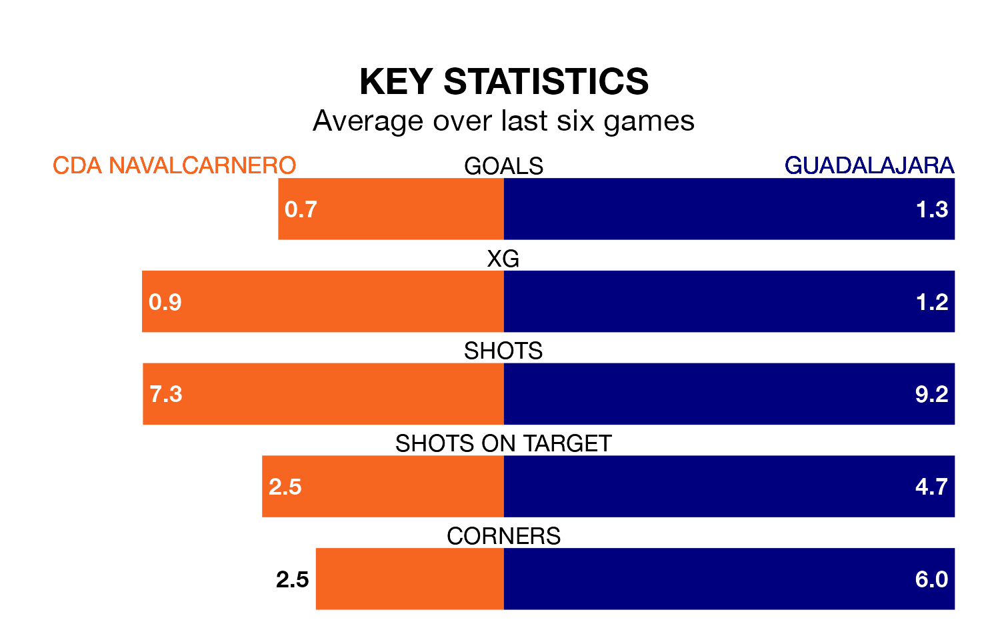

Guadalajara visit CDA Navalcarnero on Sunday on the back of three consecutive wins in the Segunda División RFEF Group 5.
Guadalajara have picked up 12 points from their last six games, and they face a CDA Navalcarnero side who have lost their last two matches, and collected 10 points from the last possible 18.
With 38 goals in 29 games so far this season, Guadalajara are scoring more than average in the league with 1.3 goals per game. But they are conceding more than average too, letting in 42 goals at a rate of 1.4 per game.
CDA Navalcarnero, meanwhile, are below average scorers, with 0.9 goals per game, compared to a league average of 1.1. They have conceded 1.1 goals per game.
The hosts are 15th in the table after 30 games, of which they have won seven and drawn 13, earning 34 points.
The away team are seven places ahead of CDA Navalcarnero in eighth, with 13 wins and four draws putting them on 43 points.
In the last three years, CDA Navalcarnero and Guadalajara have played each other on three occasions. Guadalajara won two of them and they drew once.
Their last meeting was on December 3, when Guadalajara won 3-2 at home.
CDA Navalcarnero's last match was on April 7, a 1-1 draw against AD Unión Adarve.
Guadalajara beat CD Numancia 1-0 last time out, also on April 7, with Iván Moreno Rodríguez on the scoresheet.
Updated: 14:47 (UTC), 09/04/24